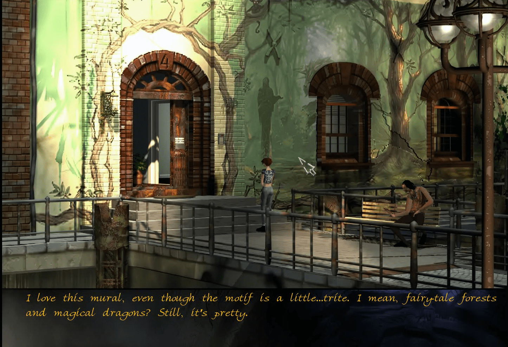
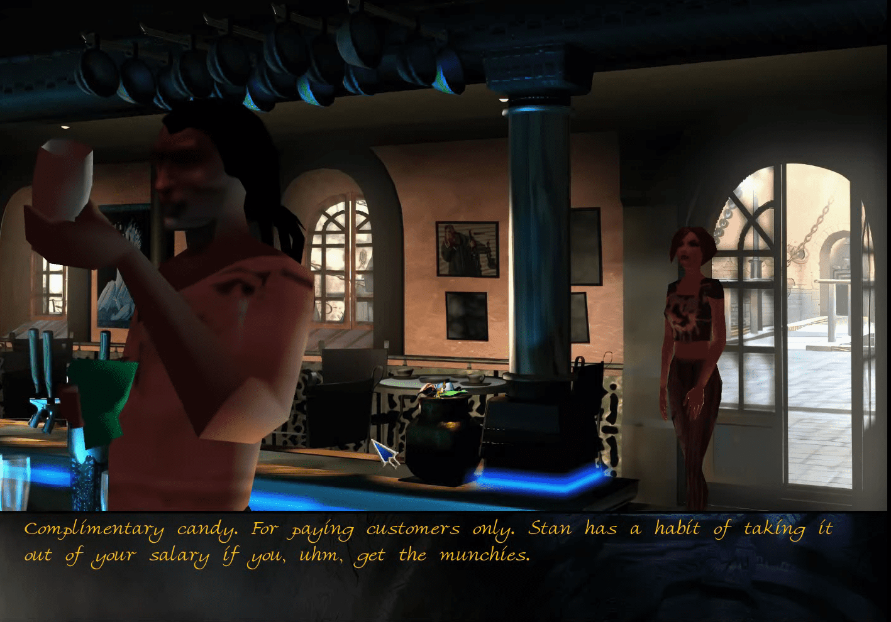
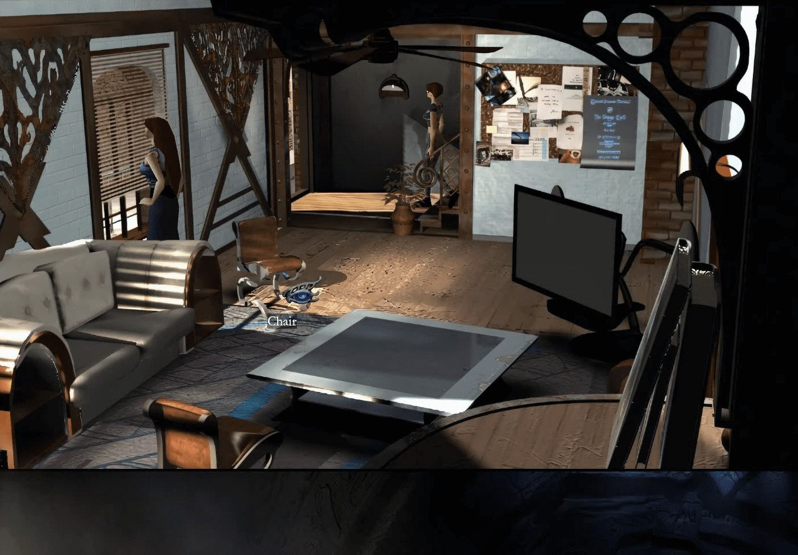
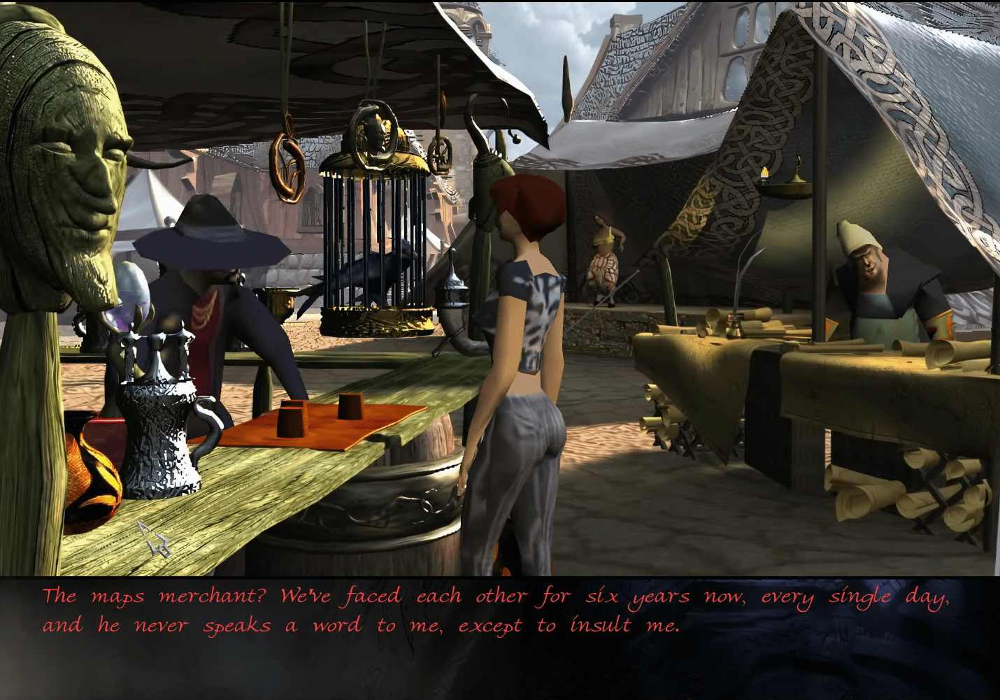
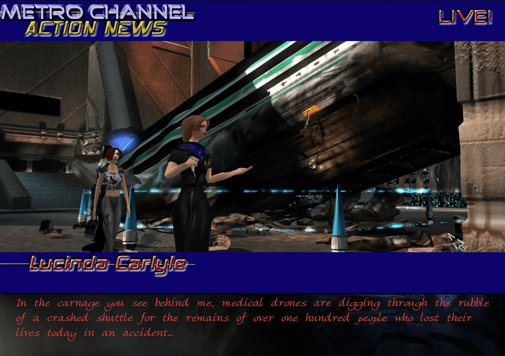
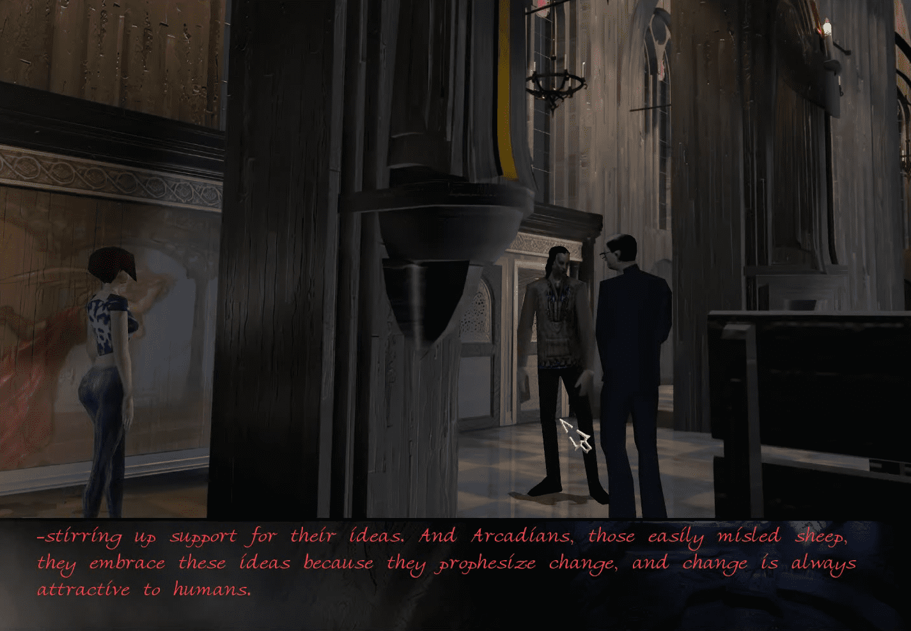

←Prologo: Un león en las calles→
Bienvenido al mundo de "The Longest Journey". Observa la introducción y cuando tengas control sobre la heroína del juego, April Ryan, camina hacia la derecha fuera de la pantalla. Habrá un terremoto, que hará que un huevo ruede fuera de su nido y sobre un par de ramas que sobresalen sobre el acantilado. Haz clic en "next" y luego haz clic en el icono de la mano para encontrar una balanza grande. Rompe la ramita del árbol y despertarás a un espíritu del árbol. Habla con el árbol y cuando hayas terminado, ve al arroyo a la derecha del árbol e ingresa a tu inventario haciendo clic derecho o haciendo clic en el ícono de la bolsa en la parte superior de la pantalla. Combina la ramita con la balanza para obtener un embudo improvisado y luego usa el embudo en el arroyo para salvar al árbol. Vuelve y habla con el árbol para finalizar el prólogo. El Capítulo 1 comienza ahora.

Parte I: Penumbra
Cuando April se despierte, recoge su diario que está sobre el escritorio al pie de su cama. Ve a tu inventario y ábrelo. Verás un trozo de papel sobresaliendo, así que tómalo para descubrir que es la hoja de horario de April. Dirígete al armario y ábrelo. Deberías ver un mono de juguete sentado en una caja en el fondo del armario, así que tómalo contigo. Abre la ventana y echa un vistazo afuera. Desata la cuerda de la ropa y observa cómo el extremo cae al agua.
Intenta salir por la puerta del dormitorio y April dirá que necesita vestirse. Cuando termine, sal al pasillo y un chico llamado Zack comenzará a hablar contigo. Despídete de la desagradable conversación y cuando él se vaya a su habitación, April lo llamará un imbécil.
Baja al primer piso y toma los fósforos de la mesa. Camina hacia el tablón de anuncios y échale un vistazo. Deberías ver una nota rosa clavada cerca de la esquina superior derecha del tablero. Es un aviso de ENCONTRADO para un anillo de oro, así que tómalo. April comenta que perdió su anillo de oro y se pregunta si el que encontraron es el suyo. Entrega la nota a Fiona, la mujer que está sentada en el sofá, y April recuperará su anillo.
Sal afuera y echa un vistazo a la máquina que está a la izquierda. Este es el primer rompecabezas del juego. Usa el anillo de oro en los cables desconectados cerca de la esquina superior derecha y luego lo que quieres lograr es que las barras cerca de la esquina inferior derecha estén todas horizontales. Utiliza el interruptor derecho para mover la luz roja de modo que bloquee la barra en la que la tengas y luego usa el interruptor izquierdo para mover las propias barras. Lo mejor es mantener una barra horizontal y trabajar para que las otras tres estén a una posición de distancia de ser horizontales.

Una vez que hayas resuelto el rompecabezas, la máquina volverá a funcionar. Gira la válvula cerca de la parte superior izquierda y luego gira la rueda para liberar la presión. Quita la abrazadera del tubo y luego quita el anillo de oro y sal de la vista ampliada.
Habla con Cortez, un extraño anciano que está sentado en el banco. Cuando hayas terminado de hablar con él, vete y dirígete a la Academia. Puedes llegar primero yendo a los puentes, luego al parque y yendo en la misma dirección que está mirando April. Una vez en la Academia, sube las escaleras y toma el pincel y la paleta que están sobre un estante cercano. Úsalos en el lienzo y observa la secuencia.

Emma pronto llegará con un mensaje de Cortez. Cuando ella se vaya, April también se irá, pero no antes de que el holoesculptura cobre vida por un breve momento. Baja las escaleras y toma el guante que está en el bote de basura. Sal de la Academia y ve al Café Fringe yendo hacia los puentes y tomando el camino hacia el norte cerca del camino hacia el parque.
Entra al café y toma algunos dulces del frasco detrás de Charlie. Habla un poco con Charlie y luego ve hacia la izquierda para entrar en la parte principal del café. Dale la hoja de horario al tipo calvo, Stanley, y habla con él; pondrá dinero en la tarjeta de efectivo de April. Antes de irte, Stanley le preguntará a April si le gustaría trabajar esta noche. Realmente no importa lo que le digas, pero la forma en que termina el capítulo cambiará según la respuesta, aunque podrás continuar con el juego de todos modos.
Ve hacia la rockola y echa un vistazo al cartel que mencionó Charlie. Deberías ver algunos boletos gratuitos en la esquina inferior derecha del cartel. Dado que April es fan de las cosas gratis, toma uno. Ve hacia donde está sentada Emma y ten una agradable charla con ella. Cuando termines, toma un poco de pan de la canasta que está en la mesa y luego regresa al apartamento de April en la Casa Fronteriza. Una vez allí, mira por la ventana y usa el pan que obtuviste del café y úsalo en el pato inflable azul. La gaviota bajará y hará que la rejilla de metal se hunda. Tira del cordón y obtendrás la cuerda de la ropa que desató anteriormente.
Regresa al café y verás al pato azul, que ahora está desinflado, sentado en una tubería. Ve hacia él y recógelo y luego dirígete al metro, que puedes alcanzar tomando el camino que se ramifica a la izquierda cerca del camino de la Casa Fronteriza, o yendo al parque y luego tomando el camino a la izquierda. Baja las escaleras y mira el escáner genético. Haz clic en los botones para obtener un pase semanal y luego usa la tarjeta de efectivo en la lente para pagar. Pasa por el escáner y antes de subir al tren, ve a tu inventario y combina la cuerda de la ropa con la abrazadera.

Mira las chispas para encontrar una gran llave de hierro reposando en las vías y luego infla el pato azul y úsalo en la abrazadera para obtener una caña de pescar improvisada. Úsala en la llave de hierro para levantarla y luego ve al inventario y mira el boleto para aprender la ubicación de la Galería Roma. Sube al metro y si miras sobre April, verás un mapa. Este es cómo te desplazas de un lugar a otro, así que haz clic en él y luego en el icono del Puente Watertown. April llegará pronto allí. El edificio al que necesitas ir está justo al lado, así que ve hacia la derecha y entra por la puerta.
El tipo del museo parece estar dormido en este momento, así que April simplemente dejará su boleto en el mostrador. Camina hacia la derecha y verás que Cortez está aquí. Habla con él por un rato y luego vuelve al metro y ve a East Venice.

El final está casi aquí, así que si le dijiste a Stanley que trabajarías, ve a la parte principal del café para obtener el primer final del capítulo. Si le dijiste que no trabajarías, ve a la Casa Fronteriza y habla con Fiona para obtener el final alternativo del capítulo. De cualquier manera, el capítulo llegará a su fin. (Yo elegí que April trabajara, así que esta guía seguirá esa elección).
Parte II: A través del espejo
Cuando tengas el control de April, baja las escaleras y observa que Fiona está mirando por la ventana. Habla con ella y eventualmente descubrirás que tuvo una experiencia extraña similar a la que tuvo April anoche en el café, excepto que la experiencia de Fiona involucraba un bosque, no una pequeña criatura que tocaba la flauta. Asegúrate de preguntarle a Fiona sobre Cortez, aunque es una lástima que ella no sepa dónde está en este momento.
Cuando hayas terminado, sube las escaleras y llama a la puerta de Zack. Habla con él de todo y te enterarás de que Cortez se esconde en el cine del centro. Para llegar allí, súbete al metro y ve a Metro Circle. Baja las escaleras y ve hacia la derecha y te encontrarás en otra parte de la la ciudad. Camina un poco por la calle y cuando llegues a la intersección, ve a la izquierda de April. Es aquí donde encontrarás el cine.
Aquí verás a un barrendero y a un detective encubierto. Aparta el cubo de la basura del camino, solo que te grite el barrendero. Notarás un poco de exudado verde debajo de la lata y algo más humos que salían de él. Usa el caramelo en el exudado y harás un trozo de caramelo duro y apestoso. Hablar al detective hasta que menciona lo que tenía de postre y luego le ofrece el pedazo de caramelo apestoso. Observa cómo el detective comienza a tener algunos "problemas" y será ahuyentado por El barrendero. Cuando regrese, te enterarás de que el sombrero del detective se cayó mientras corría
Usa el icono de la Mano en la caja de fusibles cercana para abrir una vista ampliada. Usa la llave de hierro en la cerradura para abrirla. Mueve todos los interruptores funcionales hacia la izquierda y luego ve a tu inventario y usa la curita en el guante y luego usa el guante reparado en el cable vivo. Observa cómo se apaga la iluminación del letrero y el barrendero desaparecerá en un callejón en un intento de arreglarlo.
Antes de seguirlo, regresa a la pantalla anterior y recoge el sombrero de fieltro del detective, que se puede encontrar fácilmente en medio de la calle. Vuelve al teatro y dirígete al callejón donde entró el barrendero anteriormente. Notarás una pila de cajas y algo de basura cerca. Usa el sombrero en la parte superior de la pila y usa el mono de juguete en la parte inferior. Esto creará una sombra que parece el detective preparándose para disparar un arma

Camina hacia el bote de basura, ábrelo y usa las cerillas para encender un fuego. Mira la Secuencia que sigue y mientras el chico baila, ingresa al teatro. Verás a Cortez sentado Aquí viendo una película antigua. Acércate a él y ten una pequeña charla agradable. Mira la siguiente secuencia y aprenderás que Cortez tiene poderes asombrosos. Entra en el portal reluciente y abril será trasladado a otro mundo.
Bienvenido al mundo de Arcadia. Lo único que notarás por ahora es una pintura mural de un grupo de monjes. No hay mucho que hacer aquí, así que dirígete hacia la derecha y sal de la calle. pantalla. Aquí verás a un sacerdote. Intenta hablar con él y empezará a hablarte de un modo extraño. lengua conocida como Alltongue. Primero asiente con la cabeza, pero luego escúchalo hasta que puedas. finalmente entiendo lo que está diciendo. Descubrirás que el nombre del sacerdote es Tobías. Él te guiará afuera para explorar la ciudad de Marcuria.

Lo primero que debes hacer en la ciudad es acercarte a los puestos de comerciantes cercanos. Notarás a un vendedor de tazas y a un vendedor de mapas. Habla con el vendedor de mapas sobre todo y cuando hayas terminado, regresa al interior del templo y Vestrum Tobias dará una charla sobre Stark (el mundo de donde es April), Arcadia (el mundo en el que está ahora April) y cosas relacionadas con el Equilibrio. Es bastante larga, así que simplemente relájate y escucha atentamente. Cuando termine, vuelve a hablar con él y pregúntale sobre Brian Westhouse. Pregúntale con quién deberías hablar sobre Brian Westhouse y aprenderás que principalmente se le conoce por su apodo, 'El Hombre Rodante', porque le gusta andar en bicicleta por la ciudad.
Sal del templo y ve a hablar con el comerciante de mapas. Moléstalo sobre The Rolling Man y, finalmente, una criatura conocida como Dolmari aparecerá y el comerciante lo despedirá. Pregúntale sobre un trabajo y eventualmente te contratará. La primera tarea es entregar un mapa a Horatio Nebevay, el capitán de el Dragón Blanco. Para encontrarlo, vaya a la ciudad y haga clic en el ícono City-Gates. Dirígete a la derecha a los muelles y podrás encontrar el barco de Nebevay en el otro extremo del muelle y a la derecha.
Una vez que hayas decidido adónde ir, deberías ver a un hombre parado junto a un muelle sosteniendo una tubería. Él es el capitán. Habla con él y luego dale el mapa y luego dale la lista de entrega. usted aprende que no lo firmará debido a sus creencias religiosas. Él te dirá que para poder firmar, Tendrás que tocar música mientras lo hace porque la música distrae al 'Mo-Jaal'. Para satisfacer a ambos fiestas, ve a City-Gates y mira el puesto a la izquierda de la puerta para saber que es un puesto de instrumentos musicales. Habla con el comerciante y observa que aunque solo habla en tonos musicales, April parece entenderlo. Dale el are al comerciante para que consiga la flauta y luego regresa a Nebevay.
Vuelve a darle la lista y April jugará para él. Ahora que tienes su firma, regresa al comerciante de mapas y entréguele la lista de entrega y obtendrá su segunda tarea. Esta vez, consigue entregar un mapa al mismísimo Rolling Man. Se te proporcionarán algunas instrucciones complicadas. Ve al mapa y ve al bungalow de Westhouse.
Cuando llegues, habla con Brian. Menciona que tienes una entrega y April le entregará su mapa. Hablar con él por un tiempo y aprenderá información valiosa como que Brian dejó Stark en 1934. (más de 300 años desde el momento en que se desarrolla el juego) y que estuvo atrapado en un limbo por un tiempo hasta que logró llegar a Arcadia. También aprenderá que el verdadero nombre de Cortez es Manny Chávez. Cuando Ya terminaste de hablar, dale a Brian la lista de entrega y luego intenta irte. Brian recordará algo y te dará un reloj de bolsillo.
Vaya a su inventario y use la chincheta del reloj de bolsillo. Abril habrá logrado creó un cambio. Ella entrará automáticamente y pronto te encontrarás de regreso en Stark. A lo largo de La conversación se llevará a cabo entre April y Cortez, así que asegúrese de preguntarle a Cortez sobre todo. Cuando él se vaya, April se irá automáticamente con él y terminarás en East Venice. Ve al café y hablar con Charlie. Ve a la parte principal del café, April tomará asiento y Emma se sentará. entrar poco después. Al igual que con la primera parte, tu elección afectará el final del capítulo, por lo que si Si quieres tener una cita con Zack, dile a Emma que hiciste una promesa. Si no lo haces, díselo a Emma. Te quedarás en la cafetería. De cualquier manera, aquí viene la tercera parte.
Parte III: Amigos y enemigos
Una vez más te encontrarás en la habitación de April. Sal de la habitación y podrás tener una agradable charla con Zack. Realmente no importa qué final obtuviste en el último capítulo porque de todas formas estará maldiciendo, sea cual sea.
Cuando entre en su apartamento, salga de Border House y tome el metro hasta Hope Street. Caminar desde las escaleras norte hasta la catedral. Ve a los confesionarios y conocerás al padre. Raúl. Pregúntele sobre Warren Hughes y descubrirá que frecuenta el Edificio 87 y que Pertenece a una pandilla llamada Razorblades. Sal de la catedral y dirígete al Edificio 87, que está en la lado opuesto de la calle del metro.
Habla con el niño en las escaleras para saber que es Warren Hughes. Para que él te ayude, tú tienes que irrumpir en el departamento de policía, destruir sus antecedentes penales y descubrir dónde está su hermana. ser retenido. Vaya al metro y vaya a Metro West.
Una vez allí, observe sus alrededores y asegúrese de mirar las dos señales de tráfico. Usa la mano icono en el obstáculo y cambiará de posición. Métete en el contenedor y te llevarán a la comisaría. Haga clic en la caja de herramientas y April encontrará una hoja de papel para un formulario de solicitud. Haga clic en la caja de herramientas nuevamente para que April la recoja y luego vaya a su inventario y la mire. Hablar Habla con el sargento de recepción sobre todos los temas y luego dirígete a la derecha y habla con el gordo. Puede Intenta hablar con el chico flaco, pero descubrirás que su cabeza no está del todo bien porque es un Adicto al éxtasis. Habla con el gordo sobre todos los temas y luego vuelve a hablar con la sargento y pregúntale por el formulario de solicitud.
Utilice el formulario del personal de servicio para saber que necesitará un apéndice que lo acompañe. Pregunta la sargento y luego entregue el nuevo formulario a los hombres del servicio y ellos volverán a trabajar. Mira a la pantalla del videoteléfono izquierdo y utilice el videoteléfono derecho para marcar el número del izquierdo. Mientras el ícono del teléfono está en el teléfono izquierdo, acércate y dile al gordo que tiene una llamada en espera. Hablar a George, el flaco, hasta que va y usa el otro teléfono. Mire el panel y use el Icono de mano en los cables y April los cruzará, lo que hace que se abran las puertas. Intenta ingresarlos y el sargento de recepción le gritará.
Mire los estantes detrás del sargento y luego pídale que obtenga el formulario. Mientras ella está distraída, Dirígete a través de las puertas. Vuelve a salir y deberías ver un destornillador tirado en el suelo cerca. la caja de herramientas. Recógelo y luego distrae al sargento nuevamente y regresa por las puertas. Usar ¡Coloca la tarjeta en la máquina pop y obtendrás una lata de bingo! Clásico.
Dirígete al vestuario al final del pasillo y escucharás a alguien haciendo fuerza en el baño. Camina a la izquierda y habla con el hombre que está dentro del cubículo para saber que es Minnelli, el detective que viste en el calle antes. Habla un poco con él y luego mira cada uno de los casilleros. Habla con Minnelli nuevamente y dile que usted es la sargento María Hernández. Te pedirá que entres en su casillero y consigas su medicina. Abierto El casillero de Minnelli (el primero) y echa un vistazo al interior. Mírate en el espejo y luego mira el fragmento. Toma el fragmento y luego mira la nota detrás para obtener la información de inicio de sesión de Minnelli para los archivos. Llevar el frasco rosa que contiene la medicina de Minnelli y dáselo. Habla con él un poco más y toma nota. que cada vez que estornuda se le sale el ojo sintético.
Sal de la estación por la salida cerca de los videoteléfonos y podrás ser parte de un reportaje de noticias. Una vez que haya terminado, abandone el área y diríjase al metro. Ve al Radio Power Building y regresa al cine. Ve al callejón y saca el mono de juguete de la pila. examina el mono en el inventario y quítale el ojo (tendrás que usar el ícono de la Mano dos veces). Tenga en cuenta que el nombre del mono es Guybrush, lo que debería despertar algunos recuerdos en aquellos que hayan jugado. Juegos de la isla de los monos. Como nota al margen, hay bastantes referencias a juegos más antiguos y películas en El viaje más largo, así que me aseguraré de mencionarlas si me encuentro con alguna.
Vuelve a la comisaría. Distrae al sargento y atraviesa las puertas. entra al casillero habitación y use el interruptor cerca del cubículo para apagar las luces. Cuando Minnelli pierde el ojo, utiliza el ojo de mono en el ojo sintético para hacer el viejo cambio. Sal del vestuario y cerca del pop. La máquina es una puerta con un escáner de retina al lado. Utilice el ojo de Minnelli en el escáner y obtendrá acceso a los archivos. En esta sala verás una impresora, una computadora, muchos cajones y un control. panel.
Utilice la computadora en la parte superior de la pantalla e inicie sesión. Cuando solicite una consulta de búsqueda, realice una búsqueda en Warren Hughes. La computadora mostrará su registro, así que presione Eliminar y luego Imprimir. Mira el número de colonización junto al nombre de su hermana y se agregará a la lista de opciones de búsqueda. Ir Regrese a la pantalla principal y busque el número de colonización. Encontrarás otro registro. Imprime eso y luego haz una búsqueda en la Iglesia de Voltec. Verás que el nombre de Jacob McAllen es mencionado en el expediente. Haga clic en él para agregarlo a sus opciones de búsqueda y regrese y busque para Jacob McAllen.
Se le negará el acceso al archivo, pero observe que aparecen algunos símbolos extraños en la parte inferior derecha. de la pantalla, así que escríbelos o memorízalos, ya que los necesitarás para usar el control panel al otro lado de la habitación. Cierre sesión en la computadora e ingrese los símbolos en el control panel. La máquina descargará el archivo Vanguard, así que ábralo para encontrar un cubo de datos. Toma las impresiones de la impresora y abandone la estación. Ve a Hope Street y habla con Warren en el edificio. 87. Warren te contará sobre Burns Flipper, y cómo encontrarlo. Después, súbete al metro y dirígete a Newport Docks.
Una vez que hayas llegado, sube las escaleras y sal por la derecha de la pantalla, lo que te llevará a un patio de construcción. Haz clic en el garaje y April irá allí. Llama a la puerta del garaje tres. veces y Burns Flipper comenzará a hablar contigo. Después de una conversación un tanto divertida, se abrirá. y podrás entrar. Observa que te están grabando, pero no te preocupes por eso. Baja al pozo y habla con Burns Flipper. Cuando estés listo, dale el cubo de datos y mira la secuencia aprenderás bastante sobre Vanguard. Una vez hecho esto, pregúntale a Flipper sobre una identificación falsa.
Sal del garaje y usa la lata de refresco en el agitador de pintura que está cerca de la puerta del garaje. Ahora tenemos una lata de refresco muy volátil. Sal de los muelles y dirígete al lugar del accidente cerca de la estación de policía. Habla con el policía hasta que empiece a toser y le mencione que el polvo lo está ahogando. Dale el pop sólo para que explote por todo el traje del policía. Se irá para ir a repararlo, así que cuando se haya ido, use el fragmento en la cerca láser para desactivarlo y revise el dispositivo colgante en la lanzadera para Descubra que es una unidad antigravedad completamente intacta. Prueba a cogerlo y abril te comentará que se celebra en colocar mediante un par de tornillos. Usa el destornillador para quitártelo y luego regresa a los muelles y dáselo al Flipper. Recibirá tu identificación falsa mañana por la noche como muy pronto. Sal de aquí y ve a la catedral en Hope Street.
Ve a los confesionarios y escucharás parte de una conversación entre Cortez y el padre Raúl. Una vez que Raúl se vaya, habla con Cortez y sabrás que la Vanguardia lo persigue. Una vez que se vaya, ve a la Casa Fronteriza y sube al apartamento de April. Verás a Zack colgado afuera de la puerta. y en cuanto llegue abril, se dará media vuelta y entrará en su apartamento sin decir una palabra. Ir Entra al apartamento y descubre que Emma y Charlie están adentro esperando. Cuéntales lo que está pasando y pronto podrás ver una secuencia de película (creo que la Vanguardia ha encontrado a Cortez…) y podrás Termina en Arcadia nuevamente.
